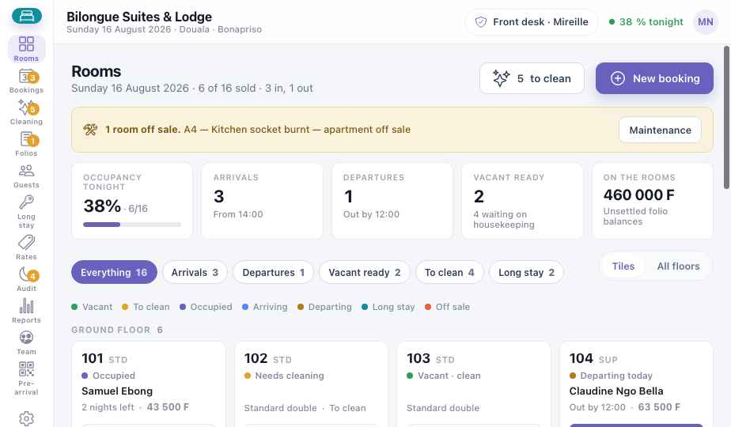
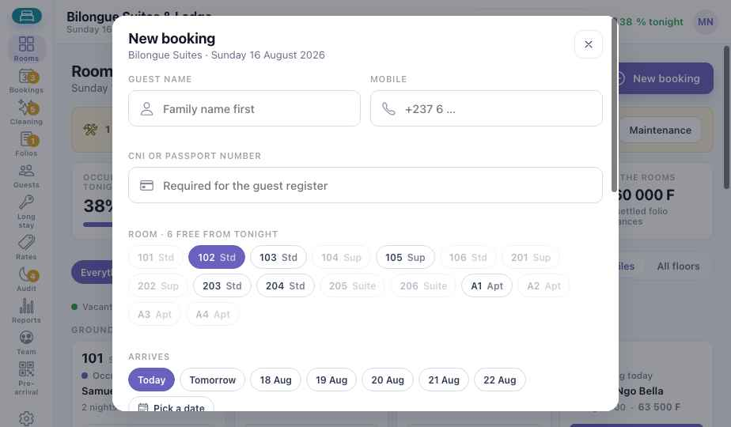
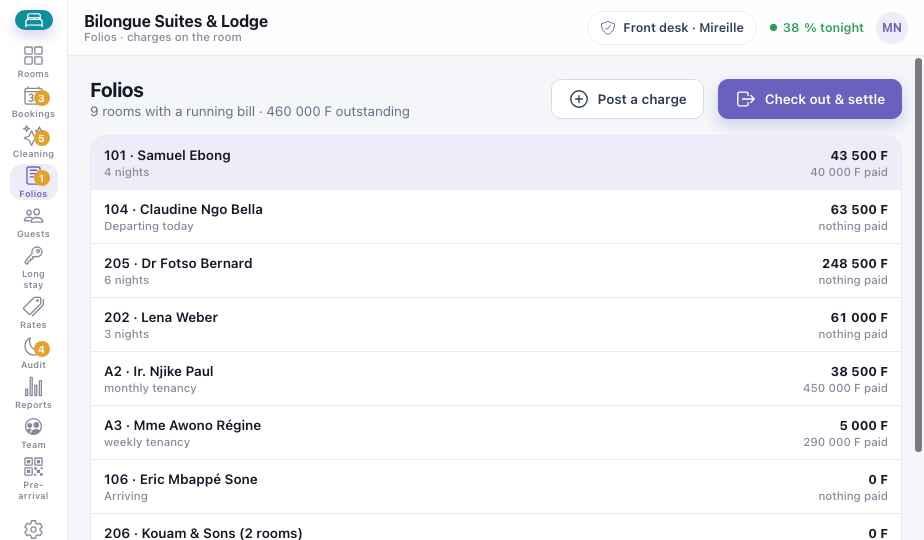
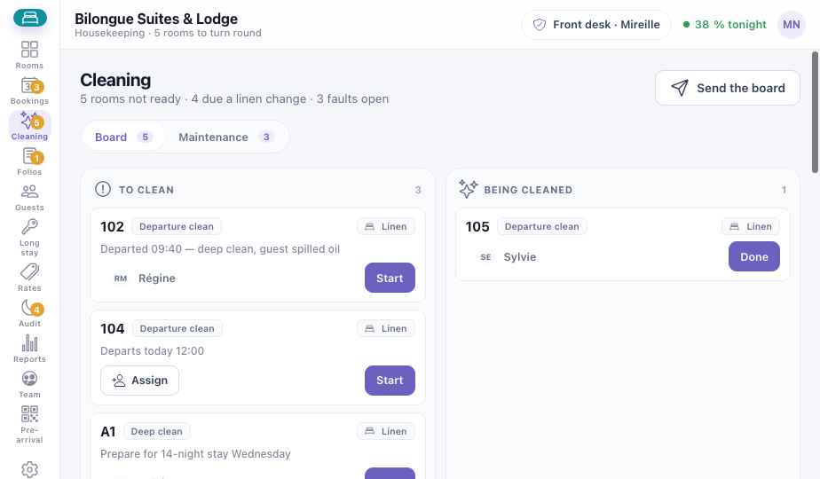
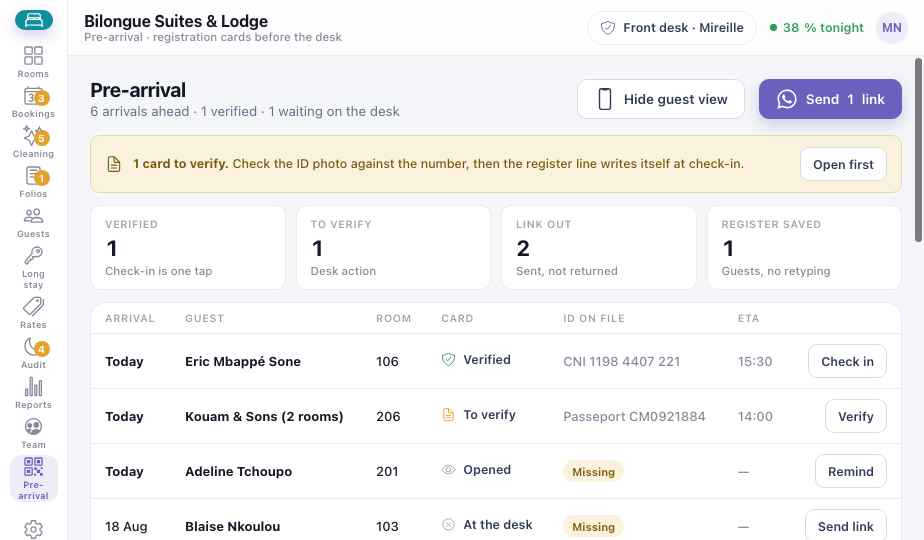
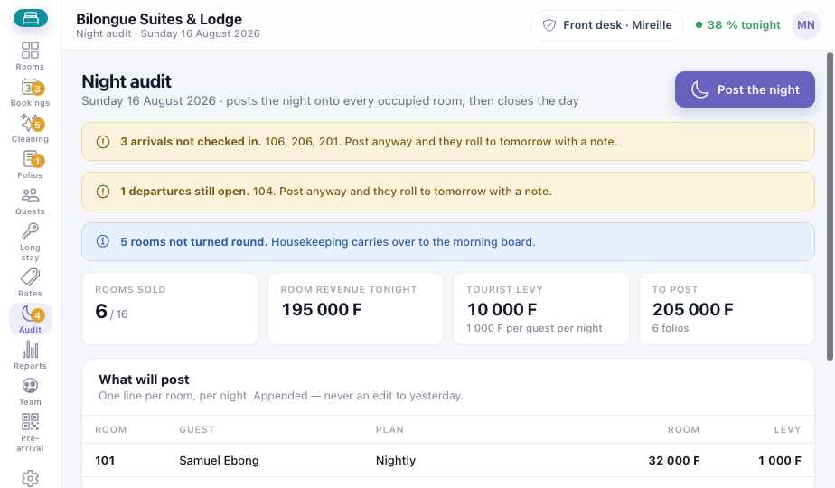

Guide de module
Hôtel
Chaque chambre, son état et qui y dort ce soir — réservations, note du client, ménage et audit de nuit, sur l'ordinateur de la réception et les téléphones des femmes de chambre. Les chapitres communs — appareils, hors ligne, paiements — sont dans les chapitres Plateforme.
Les captures montrent la version anglaise du prototype. Les boutons sont donnés en français, avec le libellé anglais entre parenthèses quand c'est utile.
Hôtel · Partie 1
Est-ce pour moi ?
Le module Hôtel convient à tout lieu qui vend un lit pour la nuit ou un appartement au mois. La configuration vous demande votre format :
Petit hôtel · auberge · motel
10 à 40 chambres vendues à la nuit. Le départ le plus courant.
Appartements · meublés
Logements loués à la semaine ou au mois, eau et électricité facturées au compteur.
Lodge · les deux
Chambres et appartements sous un même toit, souvent avec restaurant et bar.
Ce que vous avez à chaque niveau
LiteVendre les chambres
- Tableau des chambres : chaque chambre, ce soir
- Réservations, arrivées, départs
- Fiches clients avec CNI ou passeport
- Liste de ménage et planning
MidLa note et la loi
- Folio : les charges sur la chambre
- Tarifs, disponibilités, réservations OTA
- Registre de police et taxe de séjour
- Fiche de pré-arrivée · charges du restaurant
- Chambres hors service pour travaux
FullClôturer, grandir
- Audit de nuit et clôture
- Cautions et dégâts
- Longs séjours et appartements
- Taux d'occupation, PMC, RevPAR
- Séjour minimum, arrivée fermée
Une chambre, une journée
Suivez la chambre 104 du Bilongue Suites & Lodge, à Douala — d'une chambre propre à une réservation, une note, un départ, puis de nouveau en vente. Chaque étape montre qui agit, et sur quel appareil.
- Caution · MTN MoMo−40 000
- Dîner · Lodge Restaurant12 500
- Nuitée × 290 000
- Taxe de séjour · 2 pers. × 24 000
- Règlement · MoMo + espèces−66 500
- La chambre 104 est propre et en vente. Le tableau l'affiche en vert.
- Claudine réserve 2 nuits par téléphone et verse 40 000 F de caution par MoMo.
- Elle arrive. Sa fiche pré-remplie est vérifiée une fois ; la ligne du registre de police s'écrit toute seule.
- Le dîner au Lodge Restaurant est porté sur la chambre 104 — pas d'espèces à table.
- L'audit de nuit porte chaque nuitée et la taxe de séjour sur le folio.
- Départ : le solde est payé en MoMo et en espèces. Le reçu part par WhatsApp.
- La chambre 104 passe au rouge et arrive sur le téléphone de la femme de chambre.
- Sylvie appuie sur Terminé ; la gouvernante contrôle la chambre.
- De nouveau en vente — la réception peut la vendre au prochain client de passage.
Hôtel · Partie 2
Installation Lite
Environ une heure et demie, une seule fois. À faire avant votre premier client.
- Premiers pasCompte, établissement et personnel — voir P1. Donnez aux femmes de chambre le rôle Ménage : leur téléphone n'affiche que la liste de ménage.
- Choisissez votre formatPetit hôtel, appartements, ou lodge avec les deux.
- Ajoutez les types et les chambresStandard, Supérieure, Suite, Appartement — chacun avec son prix à la nuit. Puis chaque chambre : numéro, étage, type.
- Fixez les règles de la maisonArrivée dès 14:00, départ avant 12:00, taxe de séjour par personne et par nuit, TVA.
- Formulaire de réservationConfiguration → Formulaire de réservation (Booking form) : la durée maximale, le pas de la caution, et si la liste des chambres suit les dates choisies.
- PaiementsEspèces activées ; ajoutez MTN MoMo et Orange Money. La carte quand votre terminal est prêt.
- Faites un séjour testRéservez une chambre pour ce soir, faites l'arrivée, ajoutez une charge, le départ, puis le ménage.
Hôtel · Partie 3
Une journée à l'hôtel
L'ordre réel d'une journée, et l'écran utilisé à chaque moment.
| Moment | Ce que vous faites | Écran | Niveau |
|---|---|---|---|
| 07:00 · Matin | Regardez le tableau : qui part aujourd'hui, qui arrive, ce qui est hors service. | Chambres | Lite |
| 08:00 · Tableau de ménage | Envoyez le tableau ; chaque femme de chambre voit ses chambres sur son téléphone. | Ménage | Lite |
| Avant midi · Départs | Vérifiez le folio, encaissez le solde, rendez ou retenez la caution. | Folios | Mid |
| À tout moment · Client de passage ou appel | Nouvelle réservation : client, chambre, date d'arrivée, nuits, caution. | Nouvelle réservation | Lite |
| Matin · Arrivées à venir | Envoyez le lien de pré-arrivée ; vérifiez les fiches reçues. | Pré-arrivée | Mid |
| Dès 14:00 · Arrivées | Vérifiez la pièce d'identité, remettez la clé. La ligne du registre s'écrit seule. | Chambres | Lite |
| Soir · Restaurant et bar | Le client signe ; la note arrive sur son folio. | Restaurant → Folios | Mid |
| Tard · Registre de police | Chaque chambre occupée, le client, sa pièce, la taxe due ce soir. | Clients | Mid |
| Minuit · Audit de nuit | Portez la nuit sur chaque chambre occupée et clôturez la journée. | Audit de nuit | Full |
Hôtel · Partie 4
Les écrans
La barre de gauche : Chambres (Rooms), Réservations (Bookings), Ménage (Cleaning), Folios, Clients (Guests), Long séjour, Tarifs (Rates), Audit, Rapports, Équipe (Team), Pré-arrivée, et Configuration (Setup) en bas. Une femme de chambre connectée sur téléphone ne voit que Chambres, Ménage et Équipe.
Chambres Lite

1234567- Barre — les pastilles comptent ce qui attend quelqu'un aujourd'hui.
- Hors service — une chambre retirée pour travaux, avec le motif.
- Ce soir — occupation, arrivées, départs, chambres prêtes, argent sur les chambres.
- Filtres — Arrivées, Départs, Libres prêtes, À nettoyer, Long séjour.
- Tuile de chambre — la couleur est l'état ; le bouton est la prochaine action (arrivée, départ, ménage).
- À nettoyer — ouvre le tableau de ménage.
- Nouvelle réservation (New booking) — voir ci-dessous.
Nouvelle réservation Lite

12345- Client et mobile — nom de famille d'abord, comme sur la CNI.
- CNI ou passeport — obligatoire pour le registre de police. Mid
- Chambre — les chambres grisées sont prises aux dates choisies, pas seulement ce soir.
- Arrivée — aujourd'hui, demain ou les cinq jours suivants, en un geste.
- Choisir une date (Pick a date) — un calendrier jusqu'à un an. Le séjour s'affiche en plage ; les nuits déjà réservées de la chambre sont barrées ; un point indique le remplissage de l'hôtel.
Plus bas : Nuits et Caution ont chacun des boutons − / + et une case où taper directement — n'importe quel nombre de nuits, n'importe quel montant. Les tarifs à la semaine ou au mois avancent d'une semaine ou d'un mois.
Folios Mid

12345- En cours — toutes les notes ouvertes, additionnées.
- Une ligne par chambre — touchez pour voir chaque charge : nuitées, restaurant, bar, blanchisserie, taxe.
- Solde et ce qui est déjà payé.
- Ajouter une charge (Post a charge) — blanchisserie, minibar, un taxi avancé pour le client.
- Départ et règlement (Check out & settle) — espèces, MoMo, Orange Money ou partagé ; caution rendue ou retenue en partie pour dégâts. Full
Ménage Lite

123456- Tableau et Maintenance — les chambres à préparer et les pannes à réparer. Mid
- À nettoyer — les départs d'abord, puis les recouches ; changements de draps signalés.
- Commencer (Start) — la femme de chambre appuie en entrant.
- Attribuer (Assign) — confier une chambre à quelqu'un de service.
- Terminé (Done) — la chambre passe au contrôle, puis en vente.
- Envoyer le tableau — chaque téléphone reçoit sa liste.
Pré-arrivée Mid

12345- Fiches à vérifier — comparez une fois la photo de la pièce au numéro.
- État de la fiche — envoyée, ouverte, à vérifier, vérifiée, ou remplie à la réception.
- Vérifier — à l'arrivée, la ligne du registre s'écrit seule ; personne ne recopie un passeport.
- Vue client — ce que le client voit sur son téléphone.
- Envoyer le lien — par WhatsApp.
Disponible bientôt
Audit de nuit Full

12345- Encore ouverts — arrivées non faites, départs non clôturés. Validez quand même : ils passent au lendemain avec une note.
- Chambres non préparées — reportées au tableau du matin.
- Chiffres du soir — chambres vendues, chiffre des chambres, taxe de séjour.
- Ce qui sera porté — une ligne par chambre et par nuit. La veille n'est jamais modifiée.
- Porter la nuit (Post the night) — et la journée est clôturée.
Hôtel · Partie 5
En cas de problème
Faites l'arrivée ; la chambre affiche Sans pièce et l'audit la signale. Saisissez la pièce avant l'audit de nuit — le registre de police l'exige.
Quand la liste des chambres suit les dates, la réception ne peut pas vendre une nuit réservée. Si cela arrive avec une réservation OTA saisie à la main, réservez l'un des clients dans une chambre libre du même type.
Rien n'est porté deux fois. Rallumez l'ordinateur et relancez Porter la nuit ; les chambres déjà portées sont ignorées.
Règlement → retenez une partie de la caution avec un motif. Le reçu du client l'indique. Full
Ménage → Maintenance → signalez la panne et mettez la chambre hors service. La réservation affiche une alerte ; placez le client dans une autre chambre.
Prenez des espèces, ou laissez le folio ouvert et confirmez le MoMo au retour d'internet. Les arrivées et le ménage continuent normalement.
Hôtel · Partie 6
Aller plus loin
Activez ces fonctions dans Configuration quand vous êtes prêt.
Porter sur la chambre Mid
Le restaurant et le bar envoient les notes sur le folio du client. Voir P7.
Réservations OTA Mid
Booking.com, Airbnb et agences, saisies à la main avec leur référence.
Cautions et dégâts Full
Gardez une caution, retenez-en une partie au départ avec un motif.
Longs séjours Full
Locations à la semaine ou au mois, renouvellements, eau et électricité au compteur.
Occupation, PMC, RevPAR Full
Par rapport à l'an dernier, et selon l'origine des clients.
Restrictions de séjour Full
Nuits minimum, arrivée ou départ fermé, arrêt des ventes.
Synchronisation des canaux
Disponibilités envoyées aux OTA dans les deux sens. Formule Professional.
Tableau des services Mid
Qui couvre chaque service, et où il manque du monde.
À imprimer et afficher
Fiches du personnel
2. Client de passage : Nouvelle réservation → chambre, dates, nuits, caution.
3. Arrivée : vérifier la pièce → clé.
4. Départ : Folios → Départ et règlement.
5. Le soir : chaque chambre a-t-elle une pièce ?
2. Les départs d'abord.
3. Appuyez sur Commencer en entrant.
4. Une panne ? Signalez-la depuis la chambre.
5. Appuyez sur Terminé quand la chambre est prête.
2. Saisissez les pièces manquantes.
3. Portez la nuit.
4. Attendez « Synchronisé » avant de partir.
Guide utilisateur Koomzo · Hôtel · Version 2 · Les écrans montrés sont ceux du prototype Koomzo actuel. Les noms, chambres et prix sont des exemples.